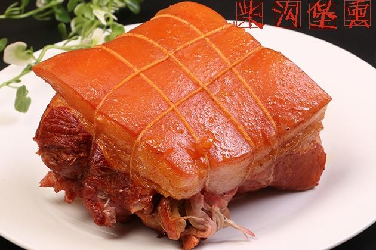
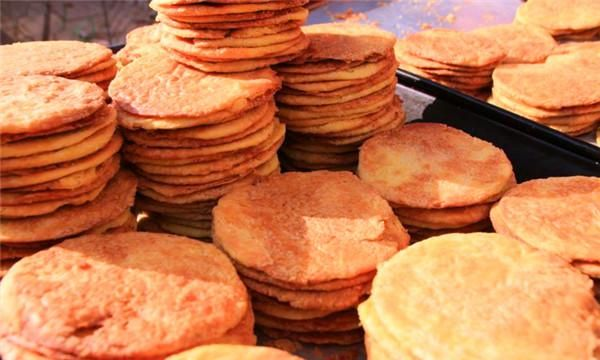

冬奥之城，塞外山城

美 食 介 绍
阳原黄糕
阳原黄糕是河北张家口阳原县的地方特产，这种特色食物主要是用黄米面制作而成，看着黄橙橙的，刚刚做好的糕闻着香喷喷的，带有美好的寓意，希望可以步步高升，图个吉利。这道黄糕还曾上过央视，可以炸着吃，也可以蒸着吃，不管你怎么吃，吃到嘴里质地松软，香甜润口，也是当地人招待客人的首选美食。
柴沟堡熏肉
柴沟堡熏肉是张家口柴沟堡镇的地方特色小吃，这种熏肉选用的都是猪的五花肉，经过熏制后，肉质鲜嫩，味道鲜美，香气扑鼻，是张家口人餐桌上必不可少的美食，也是招待客人时首选的美食。
坝上莜面
坝上莜面是张家口的传统名吃。莜面是用莜麦加工而成的，莜麦虽然在其他地方不多见，但是在坝上地区的种植是很普遍的，是这里的人们日常的主食之一。莜面可以做成很多种美食，比如窝窝、鱼鱼、拿糕等等，吃起来有筋道，而且还鲜香四溢，是张家口人餐桌上必不可少的美食。
圪渣饼
圪渣饼在张家口不少地方都能吃到，其有着悠久的历史，具体时间以无从考证。制作好的圪渣饼呈现半透明状，是一种圆形的薄饼，颜色金黄，吃起来酥、脆、香、甜，别有一番风味。在当地也是深受人们的喜爱，较为有名的有阳原圪渣饼和万全圪渣饼。